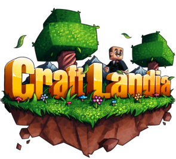
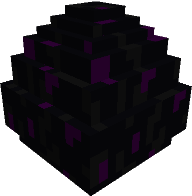

Minecraft na época era um jogo bem popular na qual as pessoas continuam jogando até hoje, a época dos famosos youtubers como
Tazercraft, VenomExtreme, Rezende, Authentic Games, nesse mesmo ano em dia 2 de Maio saiu a nova versão dele 1.5.2 que foi essa versão em
que eu comecei a jogar, que foi pela pirataria de um minecraft chamado de CraftLandia, um servidor famoso BR que até hoje muitas pessoas
aindam jogam nele, tanto que o próprio JazzGhost gravou um vídeo jogando no servidor um mini game chamado Build Battle. O foco deste
site não é sobre eles no geral, e sim sobre mim e como era ser uma criança de 6 anos jogando Minecraft naquela época, então vamos
começar com o primeiro servidor em que joguei.
Aqui está o link do vídeo do Build Battle! BuildBattle

Vamos começar com o que é CraftLandia?
Ele era o maior servidor BR da época de pirataria contendo os seguintes minigames incluidos, Survival(sobrevivência),
BuilBattle, Block Party, Speed Builders, SkyWars, SkyBlock e Hide and Seek. Esses minigames vieram depois da nova versão
1.7.2, mas naquela época ja existia o survival.
O survival era um mundo de minecraft aberto na qual juntava mais de 1000 jogadores em um server, na qual eles podiam
criar construções nos lugares que quiserem, interagirem um com o outro, se matar ou até mesmo criar parcerias nas quais
você podiam utilizar um comando chamado /add "nick do jogador" para ser amigo dela (a pessoa na qual você enviou o
pedido de amizade deve aceitar tambem) ou você poderia entrar no clã dela caso ela tivesse um, assim você teria uma tag
antes do seu nickname dizendo em qual clã você fazia parte.
Quando entrei no começo desse survival eu sempre esquecia minhas senhas de jogadores e sempre tinha que criar uma nova
nova, então eu tinha feito várias construções no meu nome em diversos biomas em que quase não tinha ninguem no lugar
que eu estava. Uma no desserto no meio do nada, na qual eu vivia de biscoito, onde eu fazia uma "lojinha voluntaria"
na qual deixava comida para as pessoas que passavam. No meio do pantano onde vivia no meio de vários slimes e morria
toda hora. Mas a primeira vez que eu entrei eu tive ajuda de um cara chamado "Tropa564" (eu não lembro os numeros)
ele tinha 16 anos e ele me ensinava como jogava Minecraft, sendo as coisas mais básicas, a gente morava no meio de uma floresta
e eramos vizinhos, eu tinha uma plantação de trigo e sempre que eu logava fazia biscoitos para ele, por ele ter
me ensinado como jogava. Depois de um tempo ele parou de logar então meio que eu parei de jogar.
Quando lançou a versão 1.7.2, o lançamentos dos minigames, eu passava o dia inteiro jogando build battle e block party, o
build battle funciona da seguinte forma, todos os jogadores escolhiam um tema e o tema mais votado seria o que todos deveriam
construir, a construção que for mais avaliada acaba ficando no pódio tendo 1°, 2° e 3° lugar. O Block Party é como se fosse um dança das cadeiras, só que em vez de sentar você tinha um bloco de uma cor quando o tempo
acabava, e seu objetivo era ficar em cima dessa cor sem cair no buraco que era gerado, pois quando o tempo e a musica
acabava só ficava o quadrado do bloco na qual a cor foi selecionada. A ultima pessoa que sobrevivesse ganhava o jogo.
Depois de um tempo uma nova atualização surgiu, a 1.8.2 na qual fez com que novos servidores e mais mini-games surgissem sendo um
deles o EggWars.
Curiosidade
Eu tinha apenas 7 anos nessa época.

O que é EggWars?
Eggwars era um jogo no estilo rouba bandeira, só que em vez de perder a bandeira e você perder o jogo, você continua jogando até morrer,
seu objetivo principal é proteger o ovo de seu time, melhorando seus equipamentos e batalhando com a outras equipes para ser o último jogador
ou equipe viva. Antigamente muitos servidores abrigavam minecraft piratas e originais para ter mais jogadores em seu servidor e ganhar uma
grana extra.
Na época que eu jogava, em um server que abrigava ambos os minecraft, tinha uma verificação para entrar, pensa que você vai criar um email
e ele precisa do seu nome e senha, é basicamente isso, utilizando seu nick e uma senha que você criou para poder entrar, isso
servia como forma de prevenção caso sua conta fosse hackeada, pois assim essa pessoa não teria acesso ao entrar nesse servidor. Tive diversos
problemas por causa disso, simplesmente por esquecer minha propria senha, por ser um jogo pirateado o mine nunca dava opção de você
entrar com uma skin personalizada, logo esse server na qual eu jogava tinha um comando chamado /skin, servia para voce pegar um skin
aleatoriamente, se você especificava /skin "girl" ele pegava uma skin aleatoria de uma garota e outras.
Tem uma historia bem marcante de quando eu jogava nesse servidor, estava jogando eggwars com 4 jogadores em cada time, o meu time
coincidentemente eram amigos e estavam jogando minecraft juntos e se falando por Skype (sim eu sou tão velha a esse nivel), e eles me
chamaram para poder entrar na call deles, eu tinha nessa época 9 anos, eu baixei Skype pelo celular, usei a minha conta para participar,
quando eu entrei dentro dela eu escutei duas vozes de pessoas provavelmente entre 15 a 16 anos e uma outra voz de uma garota de
no maximo 14, eu entrei em choque quando eu entrei na call, fiquei com tanta vergonha de falar por ser mais nova que eles que sai da call
e simplesmente ignorei eles a partida inteira.
Tem outras várias historias que contem pessoas me chamando de hacker simplesmente por saber usar arco, que era uma das ferramentas
principais do jogo, tanto que ja vi varios admins do server vendo minhas partidas para ver se eu realmente usava hack, recebi até
emails falando que tinha muitas denuncias em meu nome, e que se eles poderiam pedir provas se eu realmente não estava de hack
(nessas coisas de prova meu pai smepre me ajudava e cuidava desses emails).
Entretanto, chegou um novo sevidor, aquele que chamou minha atenção por ser pvp puro, aquele na qual eu deveria ter os melhores
recursos e que custava muito tempo de vida dentro dele, o que eu tinha de sobra. Esses servidores são chamados de Factions.